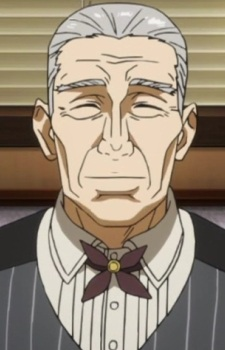
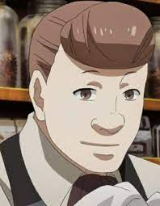
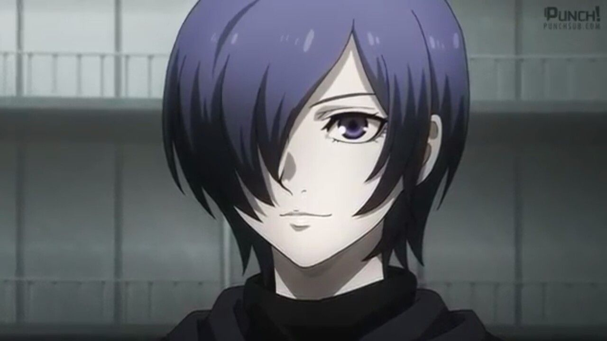
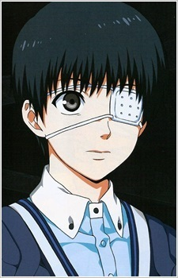
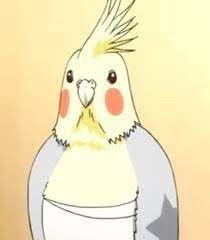

Manager
Yoshimura
Yoshimura is an SSS-rated ghoul and was the manager of the Anteiku café. He tries to help ghouls who cannot hunt or kill human beings for themselves due to his love of both species.

Waiter
Enji Koma
Enji Koma was a ghoul and a former waiter at Anteiku before its destruction. He was also an expert coffee brewer.

Part-time waitress
Touka Kirishima
Touka Kirishima is a ghoul who is an ex-waitress at Anteiku. She is the daughter of Arata Kirishima and Hikari Kirishima, the older sister of Ayato Kirishima, the wife of Ken Kaneki and the mother of Ichika Kaneki.

Part-time waiter
Ken Kaneki
Ken Kaneki was a student who studied Japanese literature at Kamii University, living a relatively normal life. However, this quickly changed after Rize Kamishiro's kakuhou was transplanted into him and transformed him into a one-eyed ghoul. Kaneki is the first known artificial one-eyed ghoul.

Cockatiel